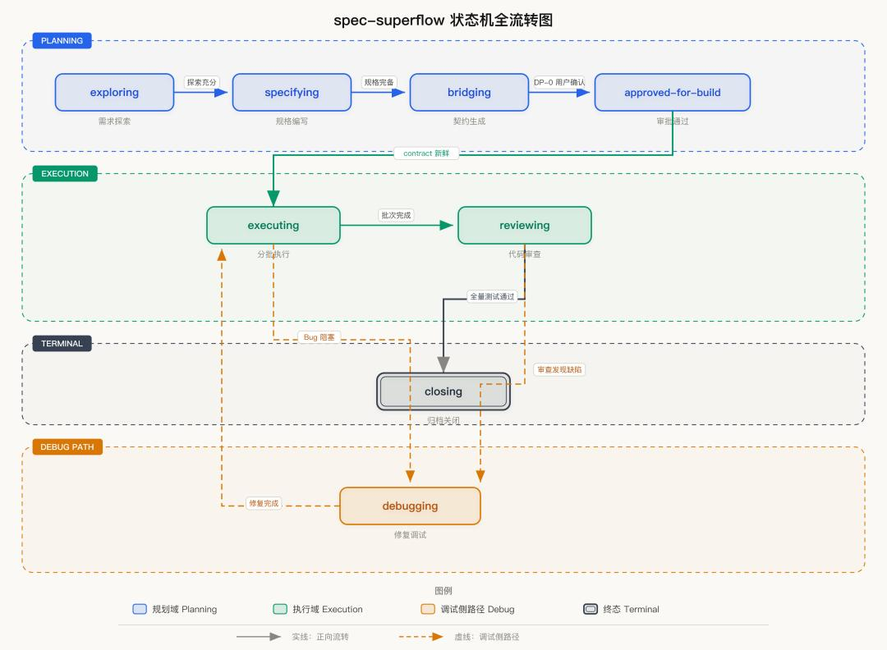

原理第四层：固定阶段式状态机流水线


OMX 强制实施四段式闭环状态机流程，从需求到交付步步为营，彻底杜绝AI自由发挥，确保产出可控、结果可预期。
01 深度需求澄清
通过苏格拉底式追问锁定需求边界，消除模糊指令，从源头防止AI进行无依据的脑补和方向偏离。
02 架构与计划确认
生成完整的实施蓝图与技术架构，该环节必须经由人工审核确认无误，方可触发后续的执行阶段。
03 智能并行执行
支持单Agent串行开发，或针对复杂任务自动调度N个AI团队并行协作，最大化开发效率与资源利用。
04 验证修复自闭环
自动运行单元测试、代码审查与编译检查，发现问题即刻触发修复流程，循环迭代直至所有指标通过。